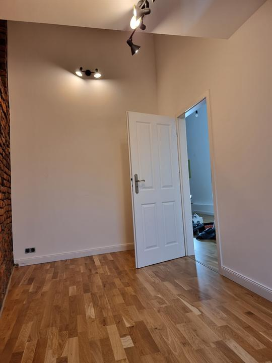

Bielsko-Biała i okolice
Detale i prace wykończeniowe
Drzwi ukryte, parapety, listwy, lamele, tapety i naprawy przed malowaniem. Domykamy wykończenie wnętrza tak, żeby po remoncie nie zostały niedoróbki.
- Drzwi ukryte i parapety
- Listwy, lamele, tapety
- Naprawy i poprawki
CenaTapetowanie od 45 zł/m²netto · pozostałe prace wyceniamy według listy — wyślij zdjęcia
Kiedy nas wołasz
- Mieszkanie od dewelopera z listą drobiazgów do zrobienia przed wprowadzeniem.
- Drzwi ukryte, które trzeba wykończyć na równo ze ścianą.
- Tapeta na jednej ścianie albo lamele jako akcent we wnętrzu.
- Pęknięcia, odbite narożniki i ubytki po instalacjach do naprawy przed malowaniem.
Zakres i sposób wykonania
Drzwi ukryte
Ościeżnice drzwi ukrytych szpachlujemy na równo ze ścianą, zbroimy styk siatką przeciw pęknięciom i malujemy razem ze ścianą, tak żeby drzwi znikały w płaszczyźnie.
Parapety i ościeża
Osadzamy i poziomujemy parapety, wyprowadzamy glify i wykańczamy styk parapetu ze ścianą akrylem.
Listwy i sztukateria
Montujemy listwy przypodłogowe, sufitowe i ścienne. Narożniki docinamy na równo, łączenia szpachlujemy i malujemy, żeby listwa wyglądała jak część ściany.
Lamele ścienne
Montujemy lamele na ścianach i zabudowach — z równym rozstawem i dokładnie dociętymi krawędziami przy suficie, podłodze i narożnikach.
Tapetowanie
Przygotowujemy ścianę, gruntujemy i kleimy tapetę z dopasowaniem wzoru. Tapetę wybierasz Ty — pomożemy policzyć, ile rolek potrzeba.
Naprawy i poprawki
Usuwamy pęknięcia tynku, naprawiamy odbite narożniki, uzupełniamy bruzdy po instalacjach i prostujemy krzywizny — przed malowaniem albo jako poprawki po innych ekipach.
Jak przebiega realizacja
Lista prac
Wysyłasz zdjęcia i spis tego, co trzeba zrobić — nawet drobiazgi.
Wycena łączna
Wyceniamy całość jednym kosztorysem, bez dopłat za każdy drobiazg osobno.
Kolejność
Ustalamy, co robimy przed malowaniem, a co po nim — tak, żeby niczego nie poprawiać dwa razy.
Wykonanie
Realizujemy prace, zabezpieczając podłogi i stolarkę.
Odbiór
Przechodzimy razem przez listę punkt po punkcie i sprzątamy.
Od czego zależy cena
- Liczba i rodzaj prac na liście.
- Połączenie z innymi usługami — drobne prace przy malowaniu lub gładziach wychodzą taniej niż osobny przyjazd.
- Stan ścian i elementów, które trzeba naprawić.
- Materiały — listwy, lamele i parapety mogą być nasze lub wybrane przez Ciebie.
Wszystkie ceny podajemy netto i z materiałem. Dla mieszkań i domów najczęściej obowiązuje 8% VAT, w pozostałych przypadkach 23%.
Policz orientacyjną cenę w minutęNajczęstsze pytania
Czy przyjmujecie małe zlecenia?
Tak, od 1500 zł netto. Drobne prace najlepiej połączyć z malowaniem lub gładziami — wychodzi taniej niż osobny przyjazd ekipy.
Ile kosztuje tapetowanie?
Od 45 zł/m² netto — przygotowanie ściany, klej i klejenie z dopasowaniem wzoru. Tapetę wybierasz i kupujesz Ty.
Czy montujecie drzwi ukryte?
Wykańczamy drzwi ukryte na równo ze ścianą: szpachlowanie ościeżnicy, zbrojenie styku i malowanie. Zakres — z montażem ościeżnicy czy tylko wykończenie — ustalamy przy wycenie.
W jakiej kolejności robić prace wykończeniowe?
Najpierw zabudowy i naprawy, potem gładzie i grunt, na końcu malowanie, a listwy i część detali po malowaniu. Więcej o tym piszemy w artykule o kolejności prac poniżej.
Poradniki na blogu
Nasze realizacje

Przed: poddasze w kamienicy przed remontem 
Po: poddasze w kamienicy po wykończeniu 
Korytarz z ceglanym sklepieniem po wykończeniu 
Klatka schodowa z odsłoniętą cegłą
Prace wykończeniowe w Bielsku-Białej i okolicach — umów bezpłatną wycenę
Pracujemy w Bielsku-Białej i okolicach — m.in. w Jaworzu, Czechowicach-Dziedzicach, Kozach, Wilkowicach i Szczyrku. Większe zlecenia realizujemy też dalej, np. w Cieszynie.